Principled BSDF¶
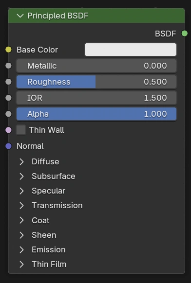
BSDF Principled kết hợp nhiều lớp thành một node duy nhất dễ sử dụng. Nó có thể mô hình hóa đa dạng các loại material.
Shader này dựa trên mô hình shading OpenPBR Surface và cung cấp các tham số tương thích với các PBR shader tương tự trong phần mềm khác, chẳng hạn các mô hình Disney và Standard Surface. Các image texture được vẽ hoặc bake từ phần mềm như Substance Painter có thể được nối trực tiếp vào đầu vào tương ứng trong shader này.
Layers¶
Lớp nền là sự pha trộn giữa các thành phần metal, diffuse, subsurface và transmission. Hầu hết material sẽ dùng một trong các thành phần này, mặc dù vẫn có thể pha trộn mượt mà giữa chúng.
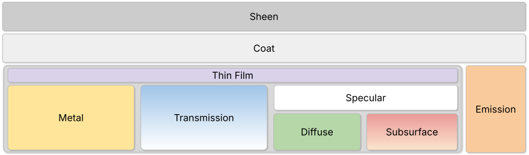
Thành phần metal là không xuyên thấu và chỉ phản xạ ánh sáng. Diffuse hoàn toàn không xuyên thấu, trong khi subsurface còn liên quan đến sự tán xạ ánh sáng ngay dưới bề mặt. Cả diffuse và subsurface đều nằm dưới một lớp specular. Thành phần transmission bao gồm cả phản xạ specular lẫn khúc xạ.
Một lớp thin film tùy chọn nằm trên các thành phần metal, transmission và specular để tạo hiệu ứng ánh màu (iridescent).
Bên trên tất cả các lớp nền là một lớp glossy coat tùy chọn. Và cuối cùng, lớp sheen nằm trên cùng của mọi lớp khác để thêm hiệu ứng lông tơ hoặc bụi.
Cũng có thể thêm sự phát sáng. Ánh sáng phát ra từ bên dưới các lớp coat và sheen, để mô hình hóa chẳng hạn các màn hình phát sáng có lớp coat hoặc bụi.
Thin Wall Mode¶
Khi Boolean Thin Wall được bật, bề mặt được chuyển sang chế độ thin-walled. Ở chế độ này, bề mặt là một tấm (slab) với các lớp đối xứng quanh lớp nền, và độ dày được coi bằng 0.
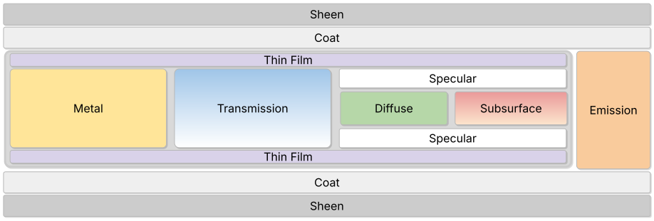
Ghi chú
Các đầu vào Subsurface Radius, Subsurface Scale và Subsurface Method không liên quan trong chế độ thin-walled.
Khi dùng chế độ thin-walled trong EEVEE, Thickness nên được đặt thành 0 và Thickness Mode nên được đặt thành Slab.
Inputs¶
- Base Color
Màu tổng thể của material, dùng cho diffuse, subsurface, metal và transmission.
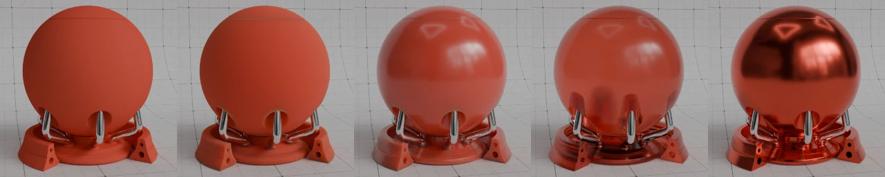
Cùng một màu nền cho nhiều loại material¶
- Roughness
Chỉ định độ nhám microfacet của bề mặt cho phản xạ và truyền qua kiểu specular. Giá trị 0.0 cho phản xạ hoàn toàn sắc nét, còn 1.0 cho phản xạ khuếch tán.
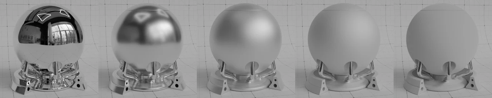
Roughness từ 0.0 đến 1.0¶
- Metallic
Pha trộn giữa mô hình material điện môi và kim loại. Ở 0.0, material gồm lớp nền diffuse hoặc truyền sáng, với một lớp phản xạ specular bên trên. Giá trị 1.0 cho phản xạ hoàn toàn specular được nhuộm bởi màu nền, không có phản xạ khuếch tán hay truyền qua.
Metallic từ 0.0 đến 1.0¶
- IOR
Chiết suất (IOR) cho phản xạ và truyền qua kiểu specular. Với hầu hết material, IOR nằm giữa 1.0 (chân không và không khí) và 4.0 (germanium). Giá trị mặc định 1.5 là xấp xỉ tốt cho kính.
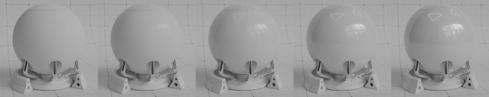
IOR từ 1.0 đến 2.0¶
- Alpha
Điều khiển độ trong suốt của bề mặt, với 1.0 là hoàn toàn đục. Thường được nối với đầu ra Alpha của một node Image Texture.
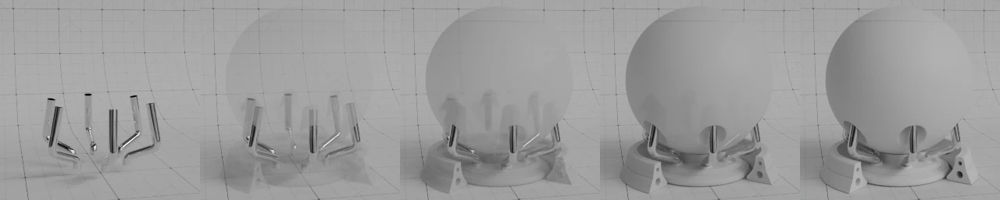
Alpha từ 0.0 đến 1.0¶
- Thin Wall
Chuyển bề mặt sang chế độ thin-walled. Hữu ích để mô hình hóa các cấu trúc mỏng như giấy, lá cây và tấm kính cửa sổ.
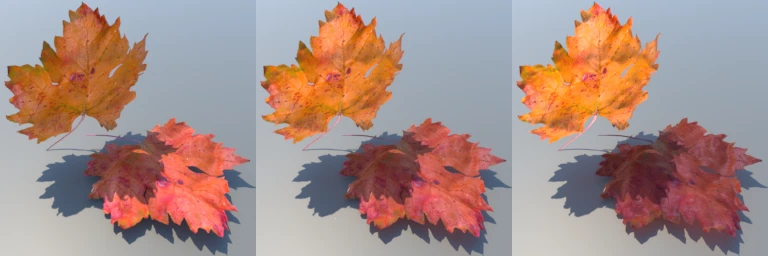
Subsurface Weight = 1, Anisotropy từ -0.7 đến 0.7¶
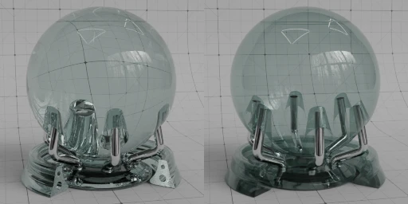
Transmission = 1, Thin Wall tắt và bật¶
- Normal
Điều khiển normal của các lớp nền.


Diffuse¶
- Roughness Cycles Only
Độ nhám bề mặt; 0.0 cho phản xạ Lambertian tiêu chuẩn, giá trị cao hơn sẽ kích hoạt Oren-Nayar BSDF.
Roughness từ 0.0 đến 1.0¶
Subsurface¶
Subsurface scattering được dùng để render các material như da, sữa và sáp. Ánh sáng tán xạ dưới bề mặt để tạo diện mạo mềm mại.
- Method
Phương pháp render để mô phỏng Subsurface scattering.
- Christensen-Burley:
Một xấp xỉ của tán xạ thể tích dựa trên vật lý. Tuy phương pháp này kém chính xác hơn Random Walk, trong một số tình huống nó lại xử lý nhiễu nhanh hơn.
- Random Walk:
Cycles Only Cung cấp kết quả chính xác cho các object mỏng và cong. Random Walk dùng tán xạ thể tích thực sự bên trong mesh, nghĩa là nó hoạt động tốt nhất với mesh kín. Các face chồng lên nhau và lỗ hổng trên mesh có thể gây ra vấn đề.
- Random Walk (Skin):
Cycles Only Phương pháp random walk được tối ưu cho việc render da. Bán kính được điều chỉnh tự động dựa trên texture màu, và hướng đi vào subsurface dùng sự pha trộn giữa truyền qua kiểu diffuse và specular với IOR tùy chỉnh. Cách này có xu hướng giữ được nhiều chi tiết bề mặt và màu sắc hơn, cũng như khớp với da đã đo lường tốt hơn.
- Random Walk (Legacy):
Cycles Only Giống với Random Walk, nhưng dùng một phép ánh xạ khác từ albedo sang các tham số tán xạ. Sẽ bị xóa trong tương lai.
- Weight
Pha trộn giữa bề mặt diffuse và subsurface scattering. Thường nên là 0 hoặc 1 (hoàn toàn diffuse hoặc hoàn toàn subsurface).
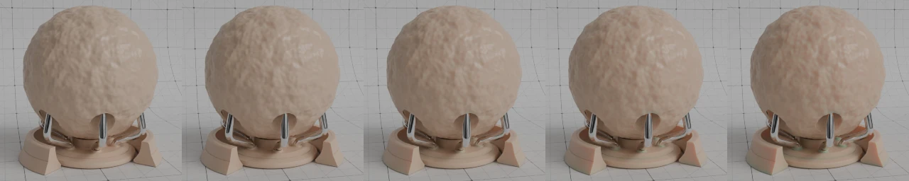
Weight từ 0.0 đến 1.0¶
- Radius
Khoảng cách trung bình mà ánh sáng tán xạ dưới bề mặt. Bán kính lớn hơn cho diện mạo mềm hơn, do ánh sáng lan vào vùng bóng và xuyên qua object. Khoảng cách tán xạ được chỉ định riêng cho từng kênh RGB, để render những material như da, nơi ánh sáng đỏ tán xạ sâu hơn. Các giá trị X, Y và Z lần lượt tương ứng với các giá trị R, G và B.
Radius từ trắng sang đỏ¶
- Scale
Tỉ lệ áp dụng lên bán kính.
Scale từ 0 cm đến 50 cm¶
- IOR Cycles Only
Chiết suất (IOR) dùng cho các tia đi vào thành phần subsurface. Giá trị này có thể được đặt khác với IOR toàn cục để mô phỏng các lớp da khác nhau.
IOR từ 1.0 đến 2.0¶
- Anisotropy Cycles Only
Tính định hướng của tán xạ thể tích trong môi trường subsurface. Giá trị 0 tán xạ đồng đều theo mọi hướng, giá trị dương tán xạ nhiều hơn về phía trước, còn giá trị âm tán xạ nhiều hơn về phía sau. Ví dụ, da người được đo là có độ anisotropy 0.8.
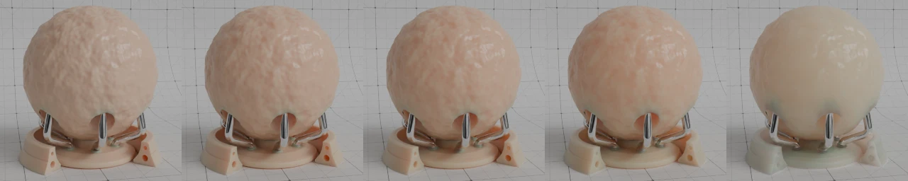
Anisotropy từ -0.9 đến 0.9¶
Specular¶
Điều khiển cả thành phần metallic lẫn lớp specular nằm trên diffuse và subsurface.
- Distribution
Phân bố microfacet sẽ dùng.
- GGX:
Phương pháp nhanh hơn Multiple-scattering GGX nhưng kém chính xác về mặt vật lý.
- Multiscatter GGX:
Cân nhắc nhiều sự kiện tán xạ giữa các microfacet. Điều này cho kết quả bảo toàn năng lượng hơn, nếu không sẽ biểu hiện thành việc tối đi bất thường.
- IOR Level
Điều chỉnh IOR để tăng hoặc giảm cường độ của lớp specular. 0.5 nghĩa là không điều chỉnh, 0 loại bỏ mọi phản xạ, 1 nhân đôi chúng ở góc tới vuông góc.
Đầu vào này được thiết kế để tiện texture hóa IOR và lượng phản xạ specular.
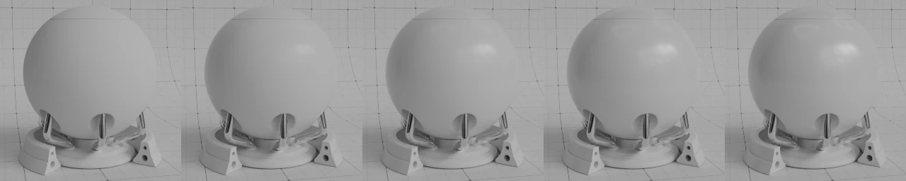
IOR level từ 0.0 đến 1.0¶
- Tint
Màu nhuộm cho phản xạ specular và metallic.
Với vật liệu phi kim loại, nó cho phép kiểm soát một cách nghệ thuật màu của phản xạ specular ở góc tới vuông góc, trong khi phản xạ ở góc sát bề mặt vẫn giữ màu trắng. Trên thực tế, phản xạ specular của vật liệu phi kim loại hoàn toàn màu trắng.
Với material kim loại, nó nhuộm màu các cạnh để mô phỏng IOR phức, như thấy trong các material như vàng hoặc đồng.
Tint từ trắng sang cam¶
- Anisotropy Cycles Only
Mức độ anisotropy cho phản xạ và truyền qua kiểu specular. Giá trị cao hơn cho các highlight kéo dài theo hướng tangent; giá trị âm cho highlight có hình dạng vuông góc với hướng tangent.
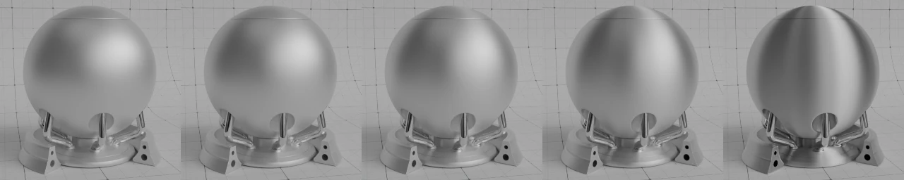
Anisotropy từ 0.0 đến 1.0 (Opaque)¶
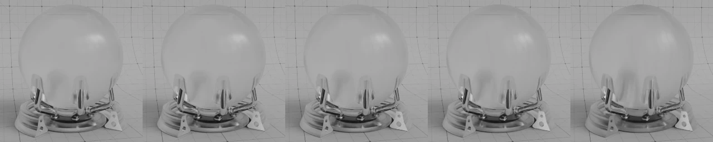
Anisotropy từ 0.0 đến 1.0 (Transmissive)¶
- Anisotropic Rotation Cycles Only
Xoay hướng của anisotropy, với 1.0 là một vòng tròn đầy đủ.
So với node Glossy BSDF, hướng kéo dài của highlight bị xoay đi 90°. Hãy cộng thêm 0.25 vào giá trị để hiệu chỉnh.
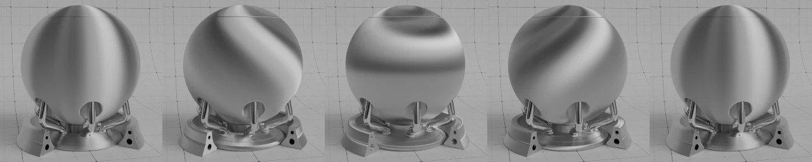
Anisotropic rotation từ 0.0 đến 1.0¶
- Tangent
Điều khiển hướng tangent cho anisotropy.
Transmission¶
Transmission được dùng để render các material như kính và chất lỏng, nơi bề mặt vừa phản xạ ánh sáng vừa truyền ánh sáng vào phần bên trong của object.
- Weight
Pha trộn giữa bề mặt hoàn toàn đục ở 0 và hoàn toàn truyền sáng ở 1.
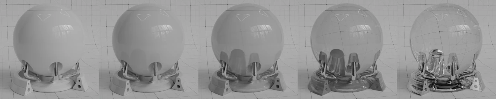
Weight từ 0.0 đến 1.0¶
- Dispersion Scale Cycles Only
Nhân tuyến tính lượng tán sắc, khiến ánh sáng bị tách thành các màu cầu vồng.
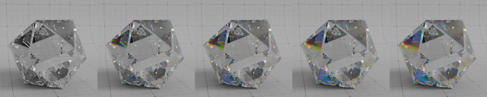
IOR = 2.4, Dispersion Abbe Number = 20, Dispersion Scale từ 0.0 đến 1.0¶
- Dispersion Abbe Number Cycles Only
Số Abbe của material. Lượng tán sắc xấp xỉ tỉ lệ thuận với \(\frac{\mathrm{Dispersion\ Scale}}{\mathrm{Dispersion\ Abbe\ Number}}\), vì vậy số Abbe càng thấp (cùng với chiết suất cao hơn) sẽ cho tán sắc càng mạnh.
Ghi chú
Tán sắc hoạt động bằng cách lấy mẫu ngẫu nhiên từ các bước sóng khả kiến. Để giảm nhiễu màu, cần số lượng Samples nhiều hơn và giá trị Indirect Light Clamping cao hơn.
Coat¶
Lớp coat nằm trên material, để mô phỏng ví dụ lớp clearcoat, sơn bóng hoặc sơn xe.
- Weight
Điều khiển cường độ của lớp coat, bao gồm cả phản xạ lẫn màu nhuộm. Với material dựa trên vật lý, thường nên là 0 hoặc 1, nhưng có thể được texture hóa để thay đổi lượng coat trên khắp bề mặt.
Weight từ 0.0 đến 1.0¶
- Roughness
Độ nhám của lớp coat.
Roughness từ 0.0 đến 1.0¶
- IOR
Chiết suất (IOR) của lớp coat. Ảnh hưởng đến độ phản xạ cũng như mức suy giảm màu của lớp coat.
IOR từ 1.0 đến 2.0¶
- Tint
Thêm màu nhuộm cho lớp coat bằng cách mô hình hóa sự hấp thụ trong lớp. Độ bão hòa tăng ở các góc càng sát bề mặt, do ánh sáng phải đi xa hơn qua môi trường, tùy thuộc vào IOR.
Tint từ trắng sang xanh dương¶
- Normal
Điều khiển normal của lớp Coat, ví dụ để thêm một lớp coat mượt lên bề mặt nhám.
Sheen¶
Sheen mô phỏng các sợi rất nhỏ trên bề mặt. Với vải, nó thêm phản xạ mềm giống nhung ở gần các cạnh. Nó cũng có thể được dùng để mô phỏng bụi trên mọi loại material.
Emission¶
Sự phát sáng từ bề mặt.
Thin Film Cycles Only¶
Thin Film mô phỏng hiệu ứng giao thoa trong một lớp mỏng nằm trên material. Điều này khiến phản xạ specular có màu theo cách phụ thuộc mạnh vào góc nhìn cũng như độ dày lớp mỏng và chiết suất (IOR) của lớp mỏng và của chính material.
Hiệu ứng này thường thấy trên ví dụ màng dầu, bong bóng xà phòng hoặc lớp phủ kính. Mặc dù ảnh hưởng của nó rõ hơn trong các specular highlight, nó cũng ảnh hưởng đến việc truyền sáng.
- Thickness
Độ dày của lớp mỏng tính bằng nanomet. Giá trị 0 sẽ tắt phần mô phỏng. Hiệu ứng giao thoa mạnh nhất trong khoảng chừng 100 đến 1000 nanomet, vì đây là vùng gần bước sóng của ánh sáng khả kiến.
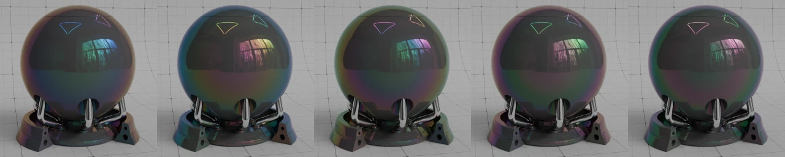
Độ dày từ 400 đến 800 nanomet¶
- IOR
Chiết suất (IOR) của lớp mỏng. Dải giá trị thường gặp nằm giữa 1.0 (chân không và không khí) và khoảng 2.0, tuy một số material có thể đạt giá trị cao hơn. Giá trị mặc định 1.33 là xấp xỉ tốt cho nước. Lưu ý rằng khi giá trị được đặt thành 1.0 hoặc bằng IOR chính của material, hiệu ứng lớp mỏng sẽ biến mất vì lớp mỏng hòa hợp quang học vào không khí hoặc material.
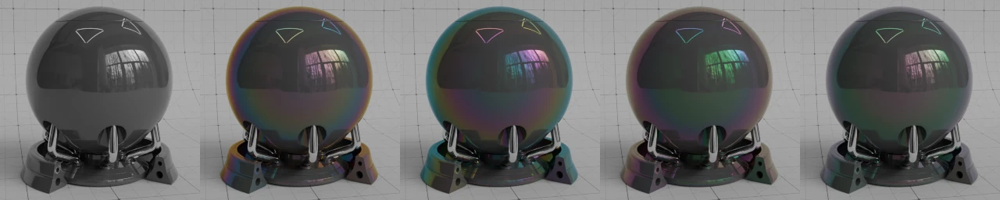
IOR từ 1.0 đến 1.5¶
Outputs¶
- BSDF
Đầu ra shader chuẩn.